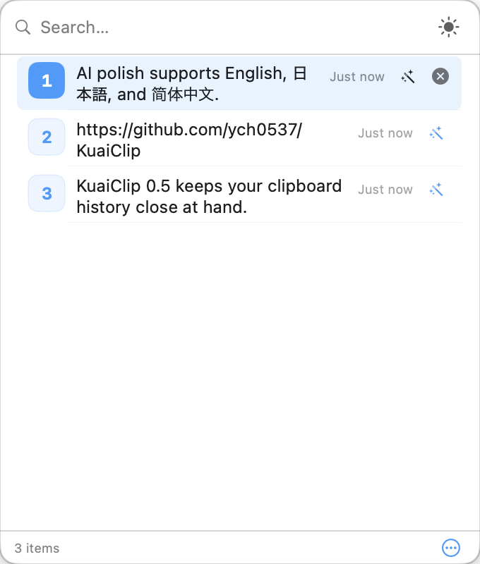
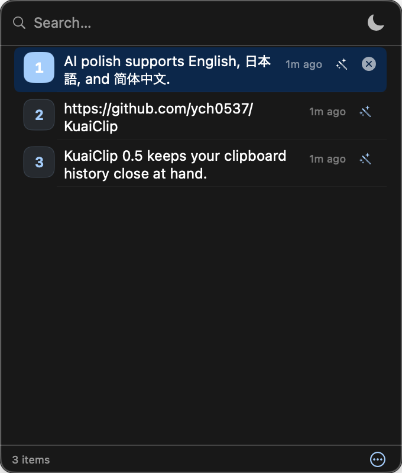

瞬间找到
输入即筛选。文本、链接、文件路径和图片，都能快速回到手边。
在菜单栏中搜索、固定并快速粘贴剪贴板历史。轻巧、原生，重要内容留在你的 Mac 上。
适用于 macOS 14 Sonoma 及更高版本 · MIT 开源


更少打断，更多专注
输入即筛选。文本、链接、文件路径和图片，都能快速回到手边。
方向键选择，Enter 复制，Option + Enter 直接粘贴。工作流无需离开键盘。
自动识别自然语言，命令、URL、代码与结构化数据不会出现不必要的润色按钮。
固定最多 10 条常用片段，以 A–J 快捷键随时取用。
自动识别有效 JSON，一键格式化、复制并保存到剪贴板历史。
白色、浅蓝、薄荷绿、暖米色、淡紫与黑色主题，在右上角一键循环切换。
更高效的列表布局、单行序号与放大图片缩略图，让窗口空间真正用于内容。
免费下载。原生、轻巧、开源。
免费下载 适用于 macOS 14 Sonoma 及更高版本 · MIT 开源